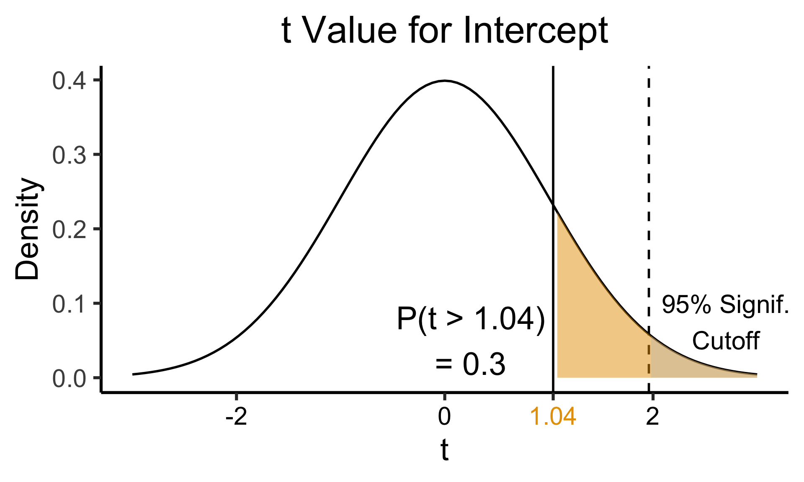
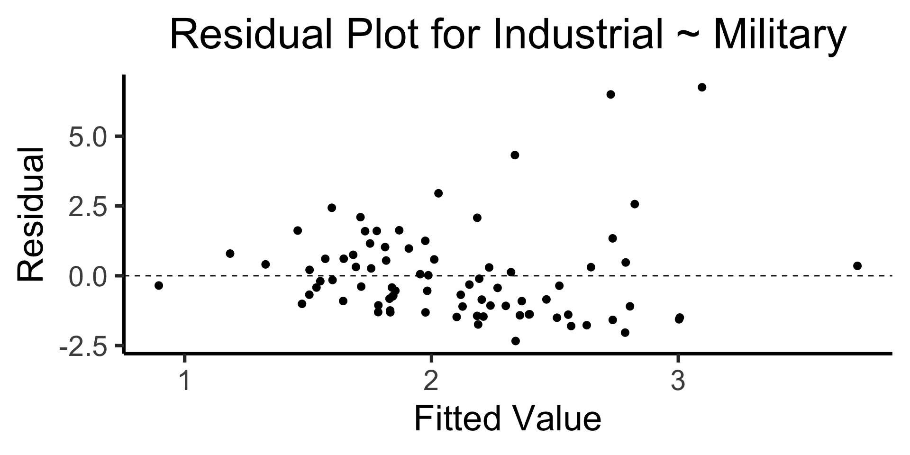

Code
source("../_globals.r")DSAN 5100: Probabilistic Modeling and Statistical Computing
Section 03
source("../_globals.r")\[ \DeclareMathOperator*{\argmax}{argmax} \DeclareMathOperator*{\argmin}{argmin} \newcommand{\bigexp}[1]{\exp\mkern-4mu\left[ #1 \right]} \newcommand{\bigexpect}[1]{\mathbb{E}\mkern-4mu \left[ #1 \right]} \newcommand{\convergesAS}{\overset{\text{a.s.}}{\longrightarrow}} \newcommand{\definedas}{\overset{\text{def}}{=}} \newcommand{\definedalign}{\overset{\phantom{\text{def}}}{=}} \newcommand{\eqeventual}{\overset{\mathclap{\text{\small{eventually}}}}{=}} \newcommand{\Err}{\text{Err}} \newcommand{\expect}[1]{\mathbb{E}[#1]} \newcommand{\expectsq}[1]{\mathbb{E}^2[#1]} \newcommand{\fw}[1]{\texttt{#1}} \newcommand{\given}{\mid} \newcommand{\green}[1]{\color{green}{#1}} \newcommand{\heads}{\outcome{heads}} \newcommand{\iid}{\overset{\text{\small{iid}}}{\sim}} \newcommand{\lik}{\mathcal{L}} \newcommand{\loglik}{\ell} \newcommand{\mle}{\textsf{ML}} \newcommand{\nimplies}{\;\not\!\!\!\!\implies} \newcommand{\orange}[1]{\color{orange}{#1}} \newcommand{\outcome}[1]{\textsf{#1}} \newcommand{\param}[1]{{\color{purple} #1}} \newcommand{\pgsamplespace}{\{\green{1},\green{2},\green{3},\purp{4},\purp{5},\purp{6}\}} \newcommand{\prob}[1]{P\left( #1 \right)} \newcommand{\purp}[1]{\color{purple}{#1}} \newcommand{\spacecap}{\; \cap \;} \newcommand{\spacewedge}{\; \wedge \;} \newcommand{\tails}{\outcome{tails}} \newcommand{\Var}[1]{\text{Var}[#1]} \newcommand{\bigVar}[1]{\text{Var}\mkern-4mu \left[ #1 \right]} \]
Today’s Planned Schedule:
| Start | End | Topic | Recording | |
|---|---|---|---|---|
| Lecture | 12:30pm | 2:00pm | Hypothesis Testing → | |
| Break! | 2:00pm | 2:10pm | ||
| 2:10pm | 2:40pm | Hypothesis Testing Lab → | ||
| 2:40pm | 3:00pm | Student Presentation |
\[ \begin{array}{ccccc} P_{\text{post}}(\mathcal{H}) &\hspace{-6mm}\propto &\hspace{-6mm} P(X \mid \mathcal{H}) &\hspace{-6mm} \times &\hspace{-6mm} P_{\text{pre}}(\mathcal{H}) \\ \text{Posterior} &\hspace{-6mm}\propto &\hspace{-6mm}\text{Evidence} &\hspace{-6mm} \times &\hspace{-6mm} \text{Prior} \end{array} \]
\[ \begin{array}{ccccc} \mathcal{B}_{\text{post}} &\hspace{-6mm} \small\propto &\hspace{-6mm} \frac{\lambda_{\text{pre}}}{\lambda_{\text{pre}} + \lambda_X}\cdot \small\text{New Observations} &\hspace{-6mm} \small + &\hspace{-6mm} \frac{\lambda_X}{\lambda_{\text{pre}} + \lambda_X}\cdot\mathcal{B}_{\text{pre}} \end{array} \]
 : smile and nod as people present classical hypothesis testing results to you, then go home and re-analyze with Bayesian approach
: smile and nod as people present classical hypothesis testing results to you, then go home and re-analyze with Bayesian approach| Alternative Hypothesis | P-Value Determination |
|---|---|
| \(H_A: \mu > \mu_0\) | Area under the standard normal curve to the right of \(z\) |
| \(H_A: \mu < \mu_0\) | Area under the standard normal curve to the left of \(z\) |
| \(H_A: \mu \neq \mu_0\) | \(2~ \cdot\) (Area under the standard normal curve to the right of \(|z|\)) |
library(tidyverse)── Attaching core tidyverse packages ──────────────────────── tidyverse 2.0.0 ──
✔ dplyr 1.1.2 ✔ readr 2.1.4
✔ forcats 1.0.0 ✔ stringr 1.5.0
✔ lubridate 1.9.2 ✔ tibble 3.2.1
✔ purrr 1.0.2 ✔ tidyr 1.3.0
── Conflicts ────────────────────────────────────────── tidyverse_conflicts() ──
✖ dplyr::filter() masks stats::filter()
✖ dplyr::lag() masks stats::lag()
ℹ Use the conflicted package (<http://conflicted.r-lib.org/>) to force all conflicts to become errorshyp_mu <- 120
sigma <- 20
bird_dnorm <- function(x) dnorm(x, mean=hyp_mu, sd=sigma)
sigma_df <- tribble(
~x,
hyp_mu - 3 * sigma,
hyp_mu - 2 * sigma,
hyp_mu - 1 * sigma,
hyp_mu + 1 * sigma,
hyp_mu + 2 * sigma,
hyp_mu + 3 * sigma
)
sigma_df <- sigma_df |> mutate(
y = 0,
xend = x,
yend = bird_dnorm(x)
)
plot_rad <- 4 * sigma
plot_bounds <- c(hyp_mu - plot_rad, hyp_mu + plot_rad)
bird_plot <- ggplot(data=data.frame(x=plot_bounds), aes(x=x)) +
stat_function(fun=bird_dnorm, linewidth=g_linewidth) +
geom_vline(aes(xintercept=hyp_mu), linewidth=g_linewidth) +
geom_segment(data=sigma_df, aes(x=x, y=y, xend=xend, yend=yend), linewidth=g_linewidth, linetype="dashed") +
dsan_theme("half") +
labs(
title = "Our Hypothesized Bird Distribution",
x = "Wingspan Values (m)",
y = "Probability Density"
)
bird_plot
simulate_sample_mean <- function(N, mu, sigma) {
samples <- rnorm(N, mu, sigma)
sample_mean <- mean(samples)
return(sample_mean)
}
N <- 16
obs_sample_mean <- 129
num_reps <- 10000
sample_means <- as_tibble(replicate(num_reps, simulate_sample_mean(N, hyp_mu, sigma)))
asymp_dnorm <- function(x) dnorm((x - hyp_mu)/(sigma / sqrt(N)), 0, 1)
ggplot() +
geom_histogram(
data=sample_means,
aes(x=value, y=5*after_stat(density)),
binwidth=1) +
stat_function(
data=data.frame(x=c(100,140)),
aes(x=x, color='asymp'),
fun=asymp_dnorm,
linewidth = g_linewidth
) +
geom_segment(
aes(x = obs_sample_mean, xend=obs_sample_mean, y=-Inf, yend=Inf, color='obs'),
linewidth = g_linewidth
) +
dsan_theme("half") +
labs(
x = "Simulated Sample Mean",
y = "(Empirical) Density",
title = paste0(num_reps," Simulated Sample Means, N = 16")
) +
scale_color_manual(values=c('asymp'='black', 'obs'=cbPalette[1]), labels=c('asymp'='Asymptotic\nDistribution', 'obs'='Observed\nSample Mean')) +
remove_legend_title()label_df_signif_int <- tribble(
~x, ~y, ~label,
0.55, 0.04, "95% Signif.\nCutoff"
)
signif_cutoff <- 1.645
funcShaded <- function(x, lower_bound, upper_bound){
y <- dnorm(x)
y[x < lower_bound | x > upper_bound] <- NA
return(y)
}
funcShadedIntercept <- function(x) funcShaded(x, int_tstat, Inf)
funcShadedSignif <- function(x) funcShaded(x, signif_cutoff, Inf)
compute_z_val <- function(x) {
return ((x - hyp_mu) / (sigma / sqrt(N)))
}
obs_zval <- compute_z_val(obs_sample_mean)
obs_zval_str <- sprintf("%.2f", obs_zval)
sample_dnorm <- function(x) dnorm(compute_z_val(x))
ggplot(data=data.frame(x=c(-3,3)), aes(x=x)) +
stat_function(fun=dnorm, linewidth=g_linewidth) +
#geom_segment(data=sigma_df, aes(x=x, y=y, xend=xend, yend=yend), linewidth=g_linewidth, linetype="dashed") +
stat_function(fun = funcShadedSignif, geom = "area", fill = "grey", alpha = 0.333) +
geom_vline(aes(xintercept = signif_cutoff), linewidth=g_linewidth, linetype="dashed") +
geom_text(label_df_signif_int, mapping = aes(x = x, y = y, label = label), size = 8) +
geom_vline(aes(xintercept = obs_zval, color='sample_mean'), linewidth=g_linewidth) +
dsan_theme("half") +
labs(
title = "z-Test Distribution",
x = "z Scores",
y = "Probability Density"
) +
scale_color_manual(values=c('sample_mean'=cbPalette[1]), labels=c('sample_mean'='Z(Observed Sample Mean)')) +
remove_legend_title()
signif_cutoff <- 1.96
neg_signif_cutoff <- -signif_cutoff
label_df_signif_int <- tribble(
~x, ~y, ~label,
-2.45, 0.18, paste0("Left\nCutoff\n(",neg_signif_cutoff,")"),
2.45, 0.18, paste0("Right\nCutoff\n(",signif_cutoff,")")
)
funcShaded <- function(x, lower_bound, upper_bound){
y <- dnorm(x)
y[x < lower_bound | x > upper_bound] <- NA
return(y)
}
funcShadedIntercept <- function(x) funcShaded(x, int_tstat, Inf)
funcShadedNegSignif <- function(x) funcShaded(x, -Inf, neg_signif_cutoff)
funcShadedSignif <- function(x) funcShaded(x, signif_cutoff, Inf)
compute_z_val <- function(x) {
return ((x - hyp_mu) / (sigma / sqrt(N)))
}
obs_zval <- compute_z_val(obs_sample_mean)
sample_dnorm <- function(x) dnorm(compute_z_val(x))
ggplot(data=data.frame(x=c(-3,3)), aes(x=x)) +
stat_function(fun=dnorm, linewidth=g_linewidth) +
#geom_segment(data=sigma_df, aes(x=x, y=y, xend=xend, yend=yend), linewidth=g_linewidth, linetype="dashed") +
stat_function(fun = funcShadedSignif, geom = "area", fill = "grey", alpha = 0.333) +
stat_function(fun = funcShadedNegSignif, geom = "area", fill = "grey", alpha = 0.333) +
geom_vline(aes(xintercept = neg_signif_cutoff), linewidth=g_linewidth, linetype="dashed") +
geom_vline(aes(xintercept = signif_cutoff), linewidth=g_linewidth, linetype="dashed") +
geom_text(label_df_signif_int, mapping = aes(x = x, y = y, label = label), size = 8) +
geom_vline(aes(xintercept = obs_zval, color='sample_mean'), linewidth=g_linewidth) +
dsan_theme("half") +
labs(
title = "z-Test Distribution",
x = "z Scores",
y = "Probability Density"
) +
scale_color_manual(values=c('sample_mean'=cbPalette[1]), labels=c('sample_mean'='Z(Observed Sample Mean)')) +
remove_legend_title()
| \(H_0\) is: | ||
|---|---|---|
| Decision: | True | False |
| Do not reject \(H_0\) | Correct decision | Type II error |
| Reject \(H_0\) | Type I error | Correct decision |
library(ggplot2)
library(tibble)
x_data <- seq(from=0, to=1, by=0.02)
num_x <- length(x_data)
y_data <- x_data + runif(num_x, 0, 0.2)
reg_df <- tibble(x=x_data, y=y_data)
ggplot(reg_df, aes(x=x, y=y)) +
geom_point(size=g_pointsize) +
dsan_theme("quarter")
psychology
trending_flat
ggplot(reg_df, aes(x=x, y=y)) +
geom_point(size=g_pointsize) +
geom_smooth(method = "lm", se = FALSE, color = cbPalette[1], formula = y ~ x, linewidth = g_linewidth*3) +
dsan_theme("quarter")Find a line \(\widehat{y} = mx + b\) that best predicts \(Y\) for given values of \(X\)
N <- 11
x <- seq(from = 0, to = 1, by = 1 / (N - 1))
y <- x + rnorm(N, 0, 0.25)
mean_y <- mean(y)
spread <- y - mean_y
df <- tibble(x = x, y = y, spread = spread)
ggplot(df, aes(x=x, y=y)) +
geom_abline(slope=1, intercept=0, linetype="dashed", color=cbPalette[1], linewidth=g_linewidth*2) +
geom_segment(xend=(x+y)/2, yend=(x+y)/2, linewidth=g_linewidth*2, color=cbPalette[2]) +
geom_point(size=g_pointsize) +
coord_equal() +
dsan_theme("half") +
labs(
title = "Principal Component Line"
)
ggplot(df, aes(x=x, y=y)) +
geom_point(size=g_pointsize) +
geom_abline(slope=1, intercept=0, linetype="dashed", color=cbPalette[1], linewidth=g_linewidth*2) +
geom_segment(xend=x, yend=x, linewidth=g_linewidth*2, color=cbPalette[2]) +
coord_equal() +
dsan_theme("half") +
labs(
title = "Regression Line"
)
On the difference between these two lines, and why it matters, I cannot recommend Gelman and Hill (2007) enough!
Principal Component Line can be used to project the data onto its dimension of highest variance
More simply: PCA can discover meaningful axes in data (unsupervised learning / exploratory data analysis settings)
library(readr)
library(ggplot2)
gdp_df <- read_csv("assets/gdp_pca.csv")
dist_to_line <- function(x0, y0, a, c) {
numer <- abs(a * x0 - y0 + c)
denom <- sqrt(a * a + 1)
return(numer / denom)
}
# Finding PCA line for industrial vs. exports
x <- gdp_df$industrial
y <- gdp_df$exports
lossFn <- function(lineParams, x0, y0) {
a <- lineParams[1]
c <- lineParams[2]
return(sum(dist_to_line(x0, y0, a, c)))
}
o <- optim(c(0, 0), lossFn, x0 = x, y0 = y)
ggplot(gdp_df, aes(x = industrial, y = exports)) +
geom_point(size=g_pointsize/2) +
geom_abline(aes(slope = o$par[1], intercept = o$par[2], color="pca"), linewidth=g_linewidth, show.legend = TRUE) +
geom_smooth(aes(color="lm"), method = "lm", se = FALSE, linewidth=g_linewidth, key_glyph = "blank") +
scale_color_manual(element_blank(), values=c("pca"=cbPalette[2],"lm"=cbPalette[1]), labels=c("Regression","PCA")) +
dsan_theme("half") +
remove_legend_title() +
labs(
title = "PCA Line vs. Regression Line",
x = "Industrial Production (% of GDP)",
y = "Exports (% of GDP)"
)
See https://juliasilge.com/blog/un-voting/ for an amazing blog post using PCA, with 2 dimensions, to explore UN voting patterns!
ggplot(gdp_df, aes(pc1, .fittedPC2)) +
geom_point(size = g_pointsize/2) +
geom_hline(aes(yintercept=0, color='PCA Line'), linetype='solid', size=g_linesize) +
geom_rug(sides = "b", linewidth=g_linewidth/1.2, length = unit(0.1, "npc"), color=cbPalette[3]) +
expand_limits(y=-1.6) +
scale_color_manual(element_blank(), values=c("PCA Line"=cbPalette[2])) +
dsan_theme("full") +
remove_legend_title() +
labs(
title = "Exports vs. Industrial Production in Principal Component Space",
x = "First Principal Component (Dimension of Greatest Variance)",
y = "Second Principal Component"
)
library(dplyr)
library(tidyr)
plot_df <- gdp_df %>% select(c(country_code, pc1, agriculture, military))
long_df <- plot_df %>% pivot_longer(!c(country_code, pc1), names_to = "var", values_to = "val")
long_df <- long_df |> mutate(
var = case_match(
var,
"agriculture" ~ "Agricultural Production",
"military" ~ "Military Spending"
)
)
ggplot(long_df, aes(x = pc1, y = val, facet = var)) +
geom_point() +
facet_wrap(vars(var), scales = "free") +
dsan_theme("full") +
labs(
x = "Industrial-Export Dimension",
y = "% of GDP"
)
Given data \((X, Y)\), we estimate \(\widehat{y} = \widehat{\beta_0} + \widehat{\beta_1}x\), hypothesizing that:
\[ \widehat{y} = \underbrace{\widehat{\beta_0}}_{\small\begin{array}{c}\text{Predicted} \\[-5mm] \text{intercept}\end{array}} + \underbrace{\widehat{\beta_1}}_{\small\begin{array}{c}\text{Predicted} \\[-4mm] \text{slope}\end{array}}\cdot x \]
is chosen so that
\[ \theta = \left(\widehat{\beta_0}, \widehat{\beta_1}\right) = \argmin_{\beta_0, \beta_1}\left[ \sum_{x_i \in X} \left(\overbrace{\widehat{y}(x_i)}^{\small\text{Predicted }y} - \overbrace{\expect{Y \mid X = x_i}}^{\small \text{Avg. }y\text{ when }x = x_i}\right)^2 \right] \]
Rlin_model <- lm(military ~ industrial, data=gdp_df)
summary(lin_model)
Call:
lm(formula = military ~ industrial, data = gdp_df)
Residuals:
Min 1Q Median 3Q Max
-2.3354 -1.0997 -0.3870 0.6081 6.7508
Coefficients:
Estimate Std. Error t value Pr(>|t|)
(Intercept) 0.61969 0.59526 1.041 0.3010
industrial 0.05253 0.02019 2.602 0.0111 *
---
Signif. codes: 0 '***' 0.001 '**' 0.01 '*' 0.05 '.' 0.1 ' ' 1
Residual standard error: 1.671 on 79 degrees of freedom
(8 observations deleted due to missingness)
Multiple R-squared: 0.07895, Adjusted R-squared: 0.06729
F-statistic: 6.771 on 1 and 79 DF, p-value: 0.01106lm Syntaxlm(
formula = dependent ~ independent + controls,
data = my_df
)Call:
lm(formula = military ~ industrial, data = gdp_df)
Residuals:
Min 1Q Median 3Q Max
-2.3354 -1.0997 -0.3870 0.6081 6.7508
Coefficients:
Estimate Std. Error t value Pr(>|t|)
(Intercept) 0.61969 0.59526 1.041 0.3010
industrial 0.05253 0.02019 2.602 0.0111 *
--- Signif. codes: 0 '***' 0.001 '**' 0.01 '*' 0.05 '.' 0.1 ' ' 1 Residual standard error: 1.671 on 79 degrees of freedom (8 observations deleted due to missingness) Multiple R-squared: 0.07895, Adjusted R-squared: 0.06729 F-statistic: 6.771 on 1 and 79 DF, p-value: 0.01106
| Estimate | Std. Error | t value | Pr(>|t|) | ||
|---|---|---|---|---|---|
| (Intercept) | 0.61969 | 0.59526 | 1.041 | 0.3010 | |
| industrial | 0.05253 | 0.02019 | 2.602 | 0.0111 | * |
| \(\widehat{\beta}\) | Uncertainty | Test statistic | How extreme is test stat? | Statistical significance |
\[ \widehat{y} \approx \class{cb1}{\overset{\beta_0}{\underset{\small \pm 0.595}{0.620}}} + \class{cb2}{\overset{\beta_1}{\underset{\small \pm 0.020}{0.053}}} \cdot x \]
| Estimate | Std. Error | t value | Pr(>|t|) | ||
|---|---|---|---|---|---|
| (Intercept) | 0.61969 | 0.59526 | 1.041 | 0.3010 | |
| industrial | 0.05253 | 0.02019 | 2.602 | 0.0111 | * |
| \(\widehat{\beta}\) | Uncertainty | Test statistic | How extreme is test stat? | Statistical significance |
library(ggplot2)
int_tstat <- 1.041
int_tstat_str <- sprintf("%.02f", int_tstat)
label_df_int <- tribble(
~x, ~y, ~label,
0.25, 0.05, paste0("P(t > ",int_tstat_str,")\n= 0.3")
)
label_df_signif_int <- tribble(
~x, ~y, ~label,
2.7, 0.075, "95% Signif.\nCutoff"
)
funcShaded <- function(x, lower_bound, upper_bound){
y <- dnorm(x)
y[x < lower_bound | x > upper_bound] <- NA
return(y)
}
funcShadedIntercept <- function(x) funcShaded(x, int_tstat, Inf)
funcShadedSignif <- function(x) funcShaded(x, 1.96, Inf)
ggplot(data=data.frame(x=c(-3,3)), aes(x=x)) +
stat_function(fun=dnorm, linewidth=g_linewidth) +
geom_vline(aes(xintercept=int_tstat), linewidth=g_linewidth) +
geom_vline(aes(xintercept = 1.96), linewidth=g_linewidth, linetype="dashed") +
stat_function(fun = funcShadedIntercept, geom = "area", fill = cbPalette[1], alpha = 0.5) +
stat_function(fun = funcShadedSignif, geom = "area", fill = "grey", alpha = 0.333) +
geom_text(label_df_int, mapping = aes(x = x, y = y, label = label), size = 10) +
geom_text(label_df_signif_int, mapping = aes(x = x, y = y, label = label), size = 8) +
# Add single additional tick
scale_x_continuous(breaks=c(-2, 0, int_tstat, 2), labels=c("-2","0",int_tstat_str,"2")) +
dsan_theme("quarter") +
labs(
title = "t Value for Intercept",
x = "t",
y = "Density"
) +
theme(axis.text.x = element_text(colour = c("black", "black", cbPalette[1], "black")))Warning: Vectorized input to `element_text()` is not officially supported.
ℹ Results may be unexpected or may change in future versions of ggplot2.
library(ggplot2)
coef_tstat <- 2.602
coef_tstat_str <- sprintf("%.02f", coef_tstat)
label_df_coef <- tribble(
~x, ~y, ~label,
3.65, 0.06, paste0("P(t > ",coef_tstat_str,")\n= 0.01")
)
label_df_signif_coef <- tribble(
~x, ~y, ~label,
1.05, 0.03, "95% Signif.\nCutoff"
)
funcShadedCoef <- function(x) funcShaded(x, coef_tstat, Inf)
ggplot(data=data.frame(x=c(-4,4)), aes(x=x)) +
stat_function(fun=dnorm, linewidth=g_linewidth) +
geom_vline(aes(xintercept=coef_tstat), linetype="solid", linewidth=g_linewidth) +
geom_vline(aes(xintercept=1.96), linetype="dashed", linewidth=g_linewidth) +
stat_function(fun = funcShadedCoef, geom = "area", fill = cbPalette[2], alpha = 0.5) +
stat_function(fun = funcShadedSignif, geom = "area", fill = "grey", alpha = 0.333) +
# Label shaded area
geom_text(label_df_coef, mapping = aes(x = x, y = y, label = label), size = 10) +
# Label significance cutoff
geom_text(label_df_signif_coef, mapping = aes(x = x, y = y, label = label), size = 8) +
coord_cartesian(clip = "off") +
# Add single additional tick
scale_x_continuous(breaks=c(-4, -2, 0, 2, coef_tstat, 4), labels=c("-4", "-2","0", "2", coef_tstat_str,"4")) +
dsan_theme("quarter") +
labs(
title = "t Value for Coefficient",
x = "t",
y = "Density"
) +
theme(axis.text.x = element_text(colour = c("black", "black", "black", "black", cbPalette[2], "black")))Warning: Vectorized input to `element_text()` is not officially supported.
ℹ Results may be unexpected or may change in future versions of ggplot2.
library(broom)
gdp_resid_df <- augment(lin_model)
ggplot(gdp_resid_df, aes(x = .fitted, y = .resid)) +
geom_point(size = g_pointsize/2) +
geom_hline(yintercept=0, linetype="dashed") +
dsan_theme("quarter") +
labs(
title = "Residual Plot for Industrial ~ Military",
x = "Fitted Value",
y = "Residual"
)
x <- 1:80
errors <- rnorm(length(x), 0, x^2/1000)
y <- x + errors
het_model <- lm(y ~ x)
df_het <- augment(het_model)
ggplot(df_het, aes(x = .fitted, y = .resid)) +
geom_point(size = g_pointsize / 2) +
geom_hline(yintercept = 0, linetype = "dashed") +
dsan_theme("quarter") +
labs(
title = "Residual Plot for Heteroskedastic Data",
x = "Fitted Value",
y = "Residual"
)\[ \widehat{y}_i = \beta_0 + \beta_1x_{i,1} + \beta_2x_{i,2} + \cdots + \beta_M x_{i,M} \]
Steve is very shy and withdrawn, invariably helpful but with very little interest in people or in the world of reality. A meek and tidy soul, he has a need for order and structure, and a passion for detail.
\(\Pr(\text{Steve is a librarian} \mid \text{description})?\)

library(tidyverse)
num_librarians <- 350000
num_farmers <- 800000000
occu_df <- tribble(
~Occupation, ~Count,
"Farmer", num_farmers,
"Librarian", num_librarians,
)
ggplot(occu_df, aes(x=factor(Occupation, levels=c("Librarian","Farmer")), y=Count, fill=Occupation)) +
geom_bar(stat='identity') +
dsan_theme() +
labs(
x = "Occupation",
y = "Count",
title = "Librarians vs. Farmers Globally"
)\[ \begin{align*} \Pr(\text{Librarian}) &= \frac{350K}{8\text{ Billion}} \approx 0.00004375 \\ \Pr(\text{Farmer}) &= \frac{800\text{ Million}}{8\text{ Billion}} = 0.1 \end{align*} \]
Meaning, if we sample 1 million people, we would expect:
\[ \begin{align*} \Pr(\mathcal{H}_L \mid E) &= \Pr(\text{Steve is librarian} \mid \text{description}) \\ &= \frac{\Pr(\text{description} \mid \text{Steve is librarian})\Pr(\text{Steve is librarian})}{\Pr(\text{description})} \\ &= \frac{(1)(0.00004375)}{\Pr(\text{description})} = \frac{0.00004375}{\Pr(\text{description})} \end{align*} \]
\[ \begin{align*} \Pr(\mathcal{H}_F \mid E) &= \Pr(\text{Steve is farmer} \mid \text{description}) \\ &= \frac{\Pr(\text{description} \mid \text{Steve is farmer})\Pr(\text{Steve is farmer})}{\Pr(\text{description})} \\ &= \frac{(0.01)(0.1)}{\Pr(\text{description})} = \frac{0.001}{\Pr(\text{description})} \\ \end{align*} \]
\[ \implies \frac{\Pr(\mathcal{H}_F \mid E)}{\Pr(\mathcal{H}_L \mid E)} = \frac{ \frac{0.001}{\Pr(\text{description})} }{ \frac{0.00004375}{\Pr(\text{description})} } = \frac{0.001}{0.00004375} \approx 23 \]
2023 = 89 years since the publication of Popper’s The Logic of Scientific Discovery (Popper 1934)↩︎